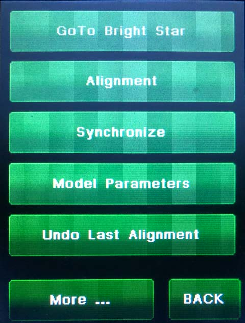
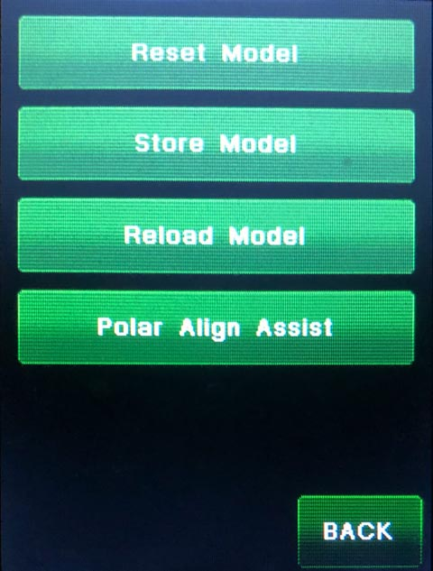

|
Gemini-2 and Gemini-1 Telescope Mount Controllers Website and Tutorials |
| Interactive Hand-Controller Menus - click on green button to Navigate |
|  |  |
| These two menus are for alignment model control.
Hit the "More ..." button on the left menu to see the menu shown on the
right. The menu displayed on on the right is is normally hidden and
will be displayed by hitting the "More..." button on the left menu Goto Bright Star: The same as on the GOTO Bright Star menu button on the bottom left of the GOTO menu off the main screen. Alignment: Manually add a star to the currently selected model. This button expects that you have already centered the star. A cross-hair eyepiece or precise centering on a sensor is recommended for best results. You can use this to add the first, or any subsequent stars to the model Either use this button to add stars to the model, or use the model builder (Menu-->Funct-->Modeling. or Cold Start-->Modeling) To build a model using the key, follow these steps: |
|
The HA angle and El are shown if you used the GoTo bright star menu above to select your GOTO target. Now if you want to add stars to the other model, just push the Up and Down buttons until you get a star offered that is at 4.6 to 6 hours in HA or more and the flip is almost guaranteed. |
|
Synchronize: Synchronizes the mount to a
star. This does not add the star to the model. This button expects that
you have already centered the star. This command is normally used
after a warm start, but can be useful at any time to resynch the mount when gotos start to navigate to positions where the destination is not properly centered. Model Parameters: See model Parameters for the East or West model. Undo the last alignment: Removes the last star modeled from the model. Reset Model: Completely Reset the selected model to none. This removes the model for which side the mount is on. It will have to be used twice to reset both models. (Changed in Feb 20 2014 HC and later.) Store Model: Store a current model onto the micro-SDcard. This stores both the East and West model. Reload Model: Reload a stored model from the micro-SDcard. This reloads both the East and West model. Polar Align Assist: Do a Polar Align Assist if no model is stored. Polar Axis Correction: Do a Polar Axis Correction if a model does exist. Please have both an East and West model built for this to work correctly. There are other menus that provide some of the functions of this menu, such as the main menu. Note: only stars above the horizon will be shown |
| Page last updated on August 1, 2020 |